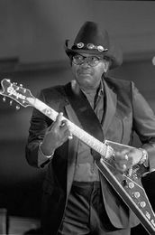
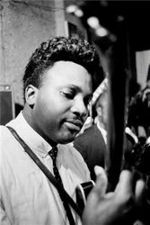
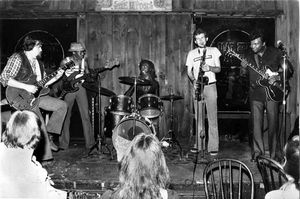
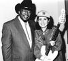

|

Otis RUSH:
Nobody can tell you
how the blues feel
unless they have the blues.
We all take it differently.
Dick SHURMAN (блюзовый историк и критик):
Его таланты как вокалиста и как инструменталиста
превосходны каждый в отделности
Но в сочетании они просто неотразимы!
В 1993 интервью с Отисом Рашем
записал штатный корреспондент-редактор журнала Jas Obreht. Часть II.
Часть I >>>
У тебя есть коллекция пластинок?
Да, да. Самые разные. У меня дома большое стерео.
- Какие пластинки ты порекомендовал бы гитаристам, которые стремятся достичь большего?
Ну, вам надо выбрать своего любимого артиста, того, кого вам нравится слушать. Понимаете, что я имею ввиду. И если это БиБиКинг, значит, пусть это будет БиБи. Если это Алберт, пусть будет Алберт. Если это я, выбирай меня. Это у каждого свое, что он любит слушать. Это может быть Кенни Баррелл, если нравится джазовое гитарничанье. Мне нравится Кенни Баррелл. Кстати, я играю кое-что из него, просто не было случая записать это на пластинку, потому что мы не пытаемся за один раз выдать как можно больше. На следующей пластинке, может быть, на ней что-то из этого будет.
- Какие у тебя любимые блюзовые исполнители?
Мне нравится Алберт Кинг - и его игра на гитаре, и его пение. Мне нравится пение Бобби Блю Блэнда, и мне нравится БиБи. Мне нравится Бадди Гай… Да мне все парни нравятся! Нет никого такого, о ком я бы мог сказать, что он мне не нравится, потому что у каждого есть что-то, чему ты бы мог поучиться. Да! Но если кто-то хочет научиться играть блюз, надо держаться поближе к тому, кого особенно нравится слушать. Если нет такой возможности, бери пластинки. Бери проигрыватель, садись и слушай. Постарайся прослушать в замедленном темпе. По началу это может быть трудно.
 - Ты так учился?
Да, да. Я про это и говорю! Тогда были пластинки на 78 и 45 об/мин. Скажем, ноты звучат слишком быстро для тебя, так? Так переводишь скорость на 33. Тут ты окажешься в другой тональности, но в этой другой тональности ты расслышишь ноты. Потом вернешь на нужную скорость и сыграешь вместе с записью в правильной тональности. Ноты разучиваются так. Я так много раз поступал с записями Кенни Баррелла. Я часто играю его "Chili Con Carne".
- А еще ты играешь кантри-музыку.
Да, немного
- От игры на гитаре ты сейчас получаешь такое же удовольствие сейчас, как когда ты был моложе?
Не могу сказать, не знаю. Разве что когда я звучу хорошо. (смех). Потому что иногда мне хочется на лифте и прямо со сцены спуститься к выходу.
- Звучит самокритично.
Правда есть правда. Иногда ты звучишь из рук вон плохо! То ли у тебя плохой усилок, то ли колонка, или еще что-то не так. Иногда погода меняется некстати, и все звучит плохо. Вот о чем я говорю. И еще иногда аккомпанирующая группа играет не то. И это все совпадает и накапливается.
- Алберт Кинг на это реагировал яростно прямо на сцене.
 Да. Ну, я понимаю его реакцию. Он иногда мог даже чересчур сильно реагировать, как мне рассказывали. Но я сам примерно так это чувствую, когда я на сцене, если что-то не так, и я это слышу. Иногда музыканты обсираются, знаешь. Иногда кто-то один невнимателен.
- Чего ты требуешь от музыкантов, которые играют с тобой?
У меня есть определенные правила. Понимаешь, когда начинается выступление, ты должен быть на сцене. Я тебя не должен искать. И не напивайся прямо во время концерта. И вовремя приходи на работу.
- Новая аппаратура изменило то, как ты работаешь над пластинками?
Да, да, о, боже ж мой, да. Ох, теперь столько всего есть, я не знаю, то ли мне часы почесать, то ли репу завести. (смех). Я тебе говорю, это с ума сойти только если посмотреть на все прибамбасы, которые теперь есть: усилители, гитары. Ты теперь и не знаешь, что с этим делать. Просто берешь по очереди - что звучит хорошо, то и оставишь.
- Какой сет-ап для тебя лучший на все времена?
Ну, я люблю старый Fender Bassman. И мне нравится тот, что у меня теперь - я играю на Messa/Boogie. Из гитар у меня #1 - это Fender. Но и Gibson мне нравится тоже.
- Tы играл на нескольких Stratocaster.
Это так. А записи на "Кобре" были сделаны с Fender. Часть моего альбома Tops была записана "вживую" с Gibson 355 - эта по-настоящему старая.
- На какой из этих гитар легче показать себя?
Да, думаю, у Fender есть мощь… Но и Gibson очень хорош во многом. Это так просто не объяснишь: аккорды и джаз, и все такое.
С- На новой пластинке какая гитара?
Это гитара Fender. Я только что получил новую гитару. Ее подарил мне Джон Инглиш (John English). И у меня слов не хватит, чтобы его отблагодарить. Этот парень - замечательный. Он со мной не знаком, и я его не знаю. Он просто сделал для меня гитару.
Какой был, когда не на сцене?
Он был таким живчиком. Не был он спокойный - очень живым всегда. (смеется). Мог подойти и сказать: "Президент, у тебя клоп на голове!" Президент: "Где?" - "Да это я!" И смеется. Вот такой он был парень.
- Она похожа на другие Fender, которые у тебя были?
Нет, она другая. На ней играется по-другому. Это лучший из Fender, на которых я играл. Лучшая гитара из всех, на каких я играл, правда. У нее особенный тон или что-то такое. У нее straight pickups звукоснимателей, как у старого Fender. Хорошо бы поговорить с этим Джоном Инглишем, потому что я не знаю, где у этой гитары что.
- Ну да, конечно.
А он в этом разбирается. (смех) Он мне сделал багровую, и добавил таких рождественских огоньков, понимаешь? И они меняют оттенок в зависимости от света - зеленый, золотой, малиновый, а потом она вся кажется черной. Это цветопредставление! Такой приход! Это прям чертовски отличная идея. Он знает, что делает. Эта гитара смотрится лучше, чем рождественская елочка. Я клянусь, да!
(Джон Инглиш из Fender Custom Shop пояснил, что новая гитара Отиса - это близкая копия настоящего Strat'62 со специально изготовленными звукоснимателями Vintage Reissue и окончательной отделкой от Alan Hamel).
- У тебя еще есть что-то из той аппаратуры, которую ты использовал в 50-х?
У меня есть пара гитар, которые Gibson. Но это не те гитары, которыми я пользовался тогда, мне их подарили.
- А что сталось с твоими старыми гитарами и усилителями?
Кто-то украл мою гитару. Но старый Fender Bassman все еще хранится у меня в кладовке.
П- То, что ты играешь на гитаре, перевернув ее вверх тормашками, изменило твой звук, поскольку ты вытягиваешь струны в противоположную сторону, не так, как большинство гитаристов?
Да, это по-другому. Потому что правша поднимает струны, а я тяну их вниз. Различие начинается здесь. Алберт Кинг играл так же. Кстати, в прошлый раз мы играли в одном концерте в Сан-Франциско, и он брал попробовать мою гитару.
- Но на своей собственной гитаре он использует другой строй.
Он играет в открытом строем, да. Но играя на моей гитаре, он играл так, как он играет.
- Ты когда-нибудь использовал открытый строй?
Да, иногда использую.
- Какие именно?
Этого я объяснить не смогу (смеется). Это просто способ настраивать гитару, всё. Разные способы настраивать свою гитару. Я все еще учусь (смех).
- Ты играл слайдом?
Да, слайд у меня есть. Но я стараюсь играть без слайда, я над этим работаю. Я не использую слайд. Я играю руками.
- Иногда с медиатором, иногда без?
Точно. Все дело в звуке. Ты то цепляешь большим пальцем, то медиатором - и звук получается разным.
- Как отличить хороший усилитель?
Судить об этом невозможно, правда. Можно в магазине играть на нем, как хочешь, но на самом деле нужно взять его на выступление и проверить, каков он, когда вокруг люди. Нужны слушатели, как на концертах - вот так нужно проверять свои усилители. И очень многие магазины позволяют так делать, разрешают взять на пробу. Играя с усилителем в клубе, ты сможешь понять, хорош ли он. Узнаешь, если выставишь достаточно громкость. Узнаешь, насколько нужно поставить громкость, чтобы получить искажения. Проверишь, хороший там динамик, или уже сдулся. Много что можно проверить.
- Тебе известны в Чикаго какие-то великие блюзмены, про кого никто не знает?
Нет. Правда, я не знаю. Я думаю, что знаю тут всех гитаристов. Я работаю в Kingston Mines, Blues Etcetera и Blues On Halsted - знаешь, там все пересекаются.
- Ты стараешься смотреть концерты?
Я слушаю всех. Как я уже говорил, всегда есть, чему поучиться. Я всегда внимателен, если можно чему-то научиться, и до сих пор я стараюсь учиться.
Я слушаю всех. Как я уже говорил, всегда есть, чему поучиться. Я всегда внимателен, если можно чему-то научиться, и до сих пор я стараюсь учиться.
- Среди блюзовых пианистов кто твой любимый?
Я тебе скажу. Я слушаю Чарлза Брауна. По блюзу меня он разит прекрасными аккордами, пассажами и нотами. Он не из большого джаза, и он не то чтобы чертовски хороший пианист, но то, как он берет ноты, это то, что мне нравится. И мне нравится Рэй Чарлз, да.
- Готов спорить, Чарлз Браун сводил женщин с ума в 50-х.
Я уверен, что да. Знаешь, одно время Рэй Чарлз пытался петь, как Чарлз Браун. В некоторых его старых песнях. Да все тогда пытались петь, как Чарлз Браун, даже я!
- У тебя была возможность поработать с ним?
Конечно, он играл со мной в Нью-Йорке целую неделю, аккомпанировал мне на клавишных. О, какое это было удовольствие! Вот такой удивительный парень играет на фортепиано для меня целую неделю. Он замечательный!
- Ты играешь на акустике?
Я могу. Это примерно одно и то же, только нельзя тянуть ноты, нельзя брать очень высокие ноты.
- Как бы вы ответили на утверждение, что нужно быть несчастным, чтобы исполнять блюз?
А кто так сказал? Не обязательно быть несчастным, чтобы играть блюз. (Смеется) Я хочу сказать, что я счастлив иногда. Иногда нет, как бы я ни старался. Блюз это моя жизнь. Я его играю, потому что этим я зарабатываю себе на жизнь, это как работа. Но на меня накатывает грусть, да, чаще так, чем по другому, чаще, чем у других, я полагаю. Я играю блюз, но не потому что я в печали, это просто жизнь!
- Ты играешь блюз, когда ты дома один?
 Да, играю, перебираю ноты, и сегодня, и почти в любой день.
- Тебе нужно репетировать?
Ну, то, чем я занимался в последнее время, это другое дело, это было для записи в студии. Сейчас я возвращаюсь к тому, что делаю обычно. Надеюсь, эта пластинка получится, и я смогу получить какие-то хорошие концерты. Сейчас у меня нет собственного менеджера. Этим занимаюсь я и моя жена Масаки.
- Похоже, сейчас идеальное время для музыкантов вроде тебя и Бадди Гая выйти вперед…
Ты абсолютно прав. Я прилагаю к этому усилия, пытаюсь начать это делать прямо сейчас. И я намерен быть настойчивым!
|